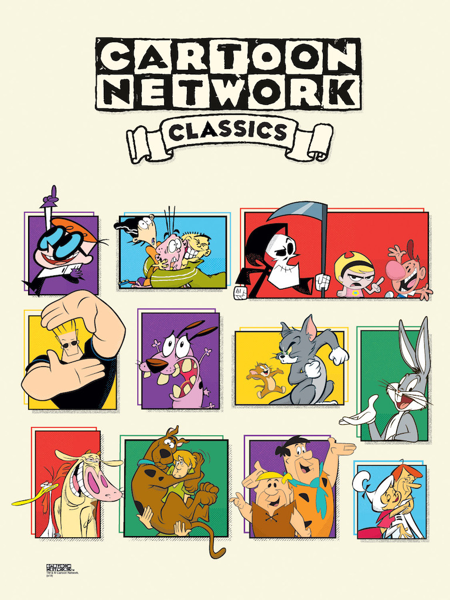
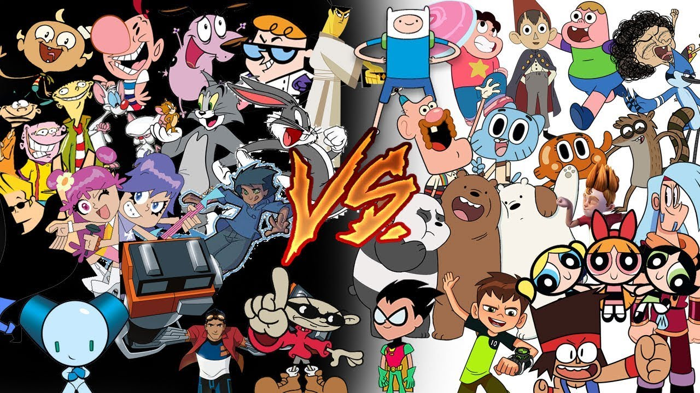
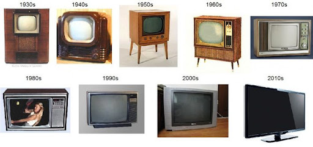
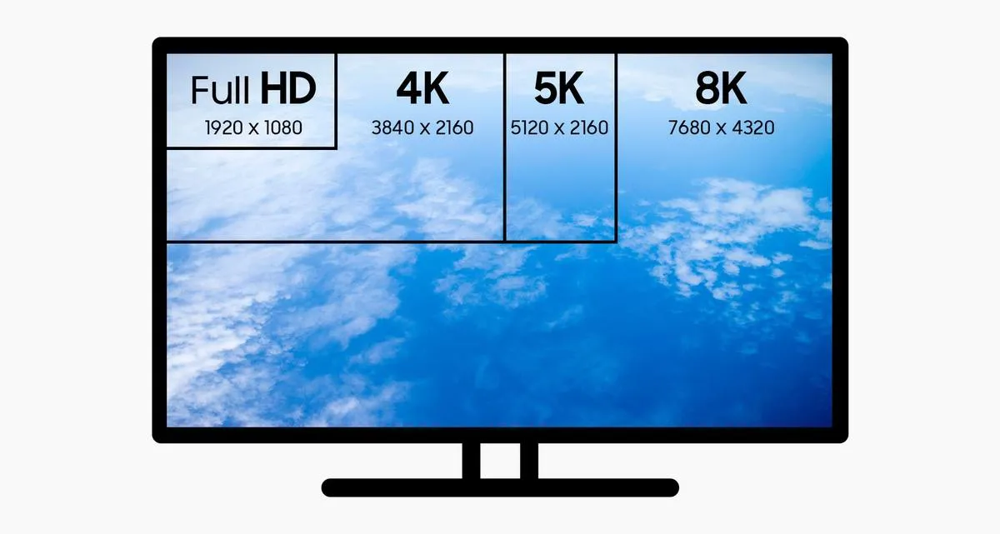
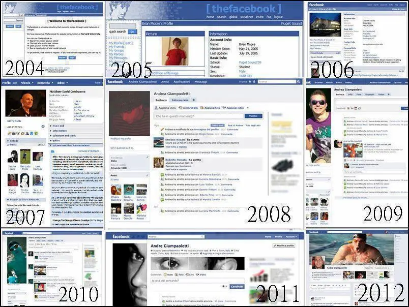
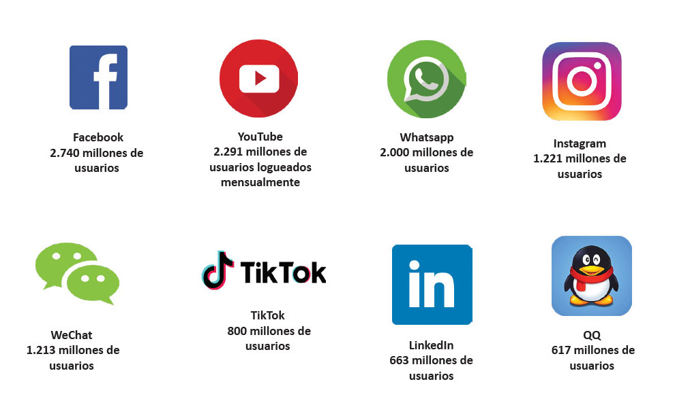

Past
Present
Cartoons
When I was younger I saw cartoons as "Courage the
Cowardly Dog", "Tom and Jerry", I really liked these
cartoons and I think at the present is the same, all
from "Cartoon Network", cartoons movies like "The land
before time", all cartoons that were funny, they made me
happy in those times.

Cartoons
At the present, I don't see any cartoons, but I remember
all those made me happy. Now I only see series and
movies that there are on any streaming platform and anime.
The cartoons that I saw in the past and the cartoons that
are in the present are really different, in the animation,
the characters all really changed a lot with the pass the
time.


Technology
The technology in the past was the begin the
"Smartphones", well I remember that. I had a cellphone on
the high school, its camera, the screen, the battery that in
these moments were characteristics good for a smartphone. Same
case for televisions.

Technology
At the present, the technology has been updated a lot,
from smartphones to cars, smartphones with a camera that
is the same as a professional camera (in the case where
the price of the phones are really expensive), like this
case, TV's has a resolution really high as the "8K" or
the cars, they may be electrics they even drive themselves.

Social Networks
When I was younger, in primary school I logged to
Facebook for the teacher to send me homework or
advertisements for the school.
I remember the interface from Facebook, was simple,
to comparison from the present it change a lot of things.
Same case to Messenger and all the social platforms

Social Networks
At present, all social platforms changed very much, from
the interface to the form that we use them.
For example; Facebook has sections as sales, appointments,
groups of many things. In another case, a lot of social
apps are not very popular as Twitter(I think that),
Slowly, Telegram, and others.
But each is useful for something
